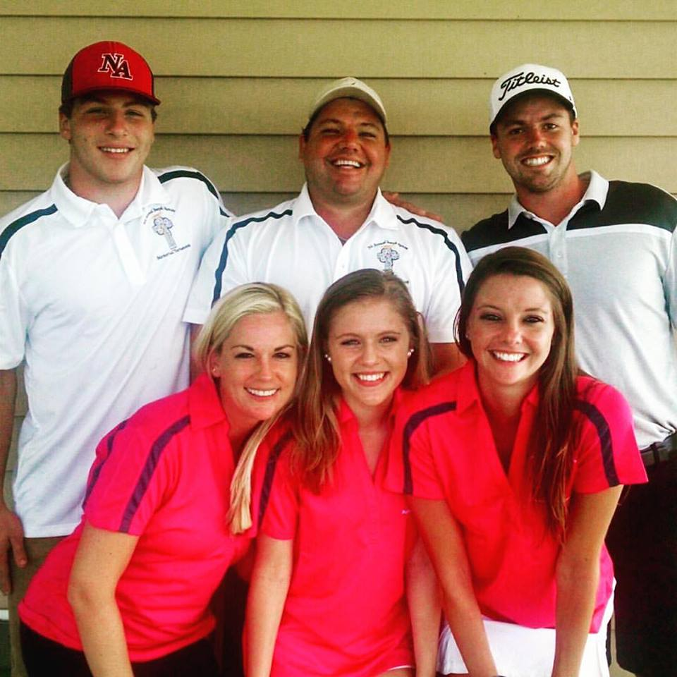
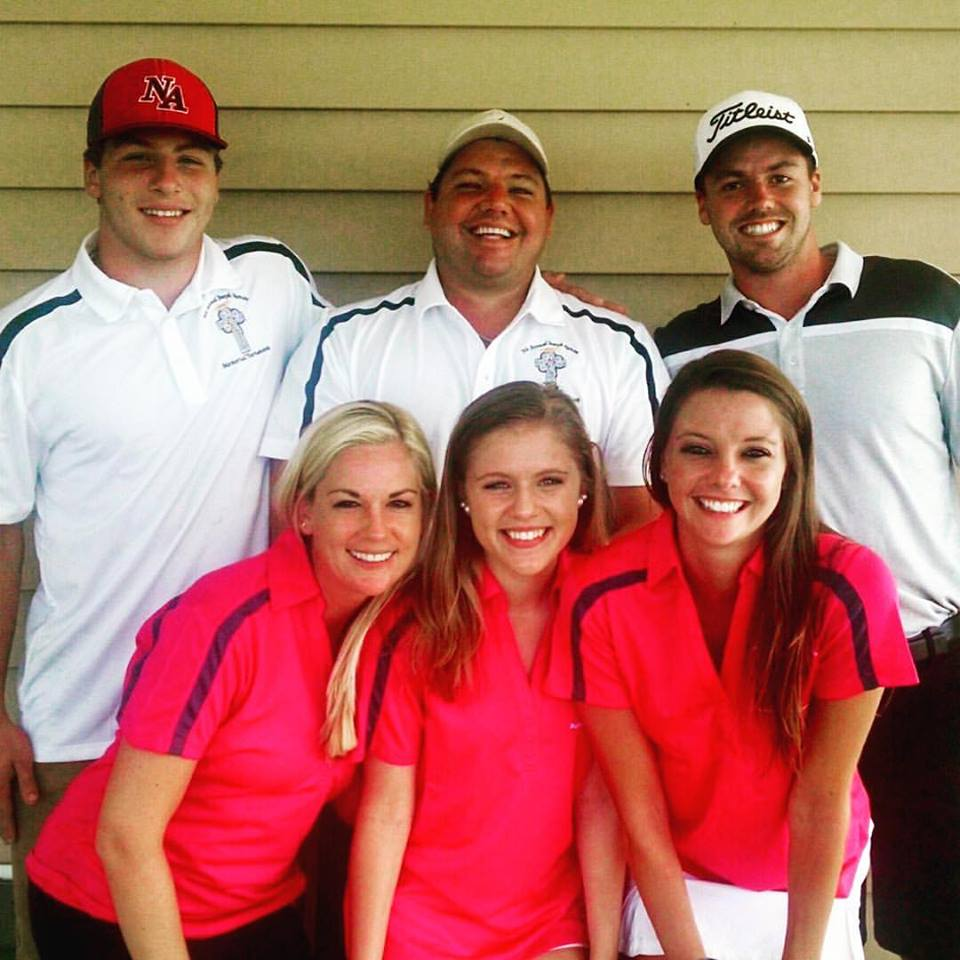

Life as a Blackbear My Family Hobbies
 


When I'm not doing schoolwork or actual work, I actually can find plenty of activities that I enjoy and appreciate. These consist of...
- Listening to Music
When I am listening to music it feels like nothing else in the world matter. It can be used as a short escape from the stresses of any college student. Some of my favorite artists include The Weeknd, Eminem, PARTYNEXTDOOR, K Forrest, and there are several more. Click on the picture and you can hear one of The Weeknd's most popular songs, "Can't Feel My Face".
- Fishing
There is nothing better than finding the perfect fishing spot and fishing there all day long with no other worries on your mind. I use this hobby as a stress-reliever as well. Catching your biggest fish is an incredible feeling and is worth the long hours of sitting on a bank or boat. Back home, there are plenty of great fishing spots around. These include Lake Cochichewick, Steven's Pond, and Chadwick's Pond.
- Talking to Friends
I've been very lucky when it came to finding great friends. Whenever I have free time, they are usually the first people I go to for whatever I need. This could be anything from some good laughs to serious advice. Its nice to know that you have people that are always there for you besides your immediate family. Its not necesarily a hobby, but talking to friends is a great way to get rid of some free time and enjoy their presence. Here is a picture of me and a few of my friends at prom last year.
LinkedIn Facebook Twitter Resume Contact Me
 Homepage
Homepage